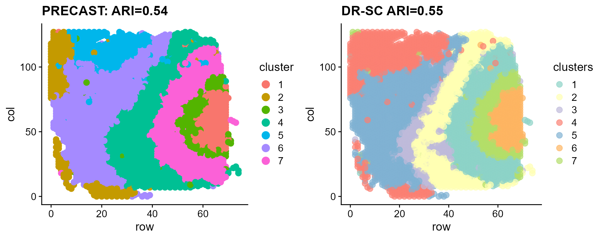
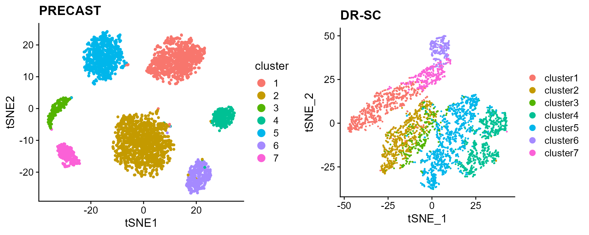

vignettes/PRECAST.DLPFC.Rmd
PRECAST.DLPFC.RmdThis vignette introduces the PRECAST workflow for the analysis of single spatial transcriptomics dataset. The workflow consists of three steps
We demonstrate the use of PRECAST to one human dorsolateral prefrontal cortex Visium data that are here, which can be downloaded to the current working path by the following command:
githubURL <- "https://github.com/feiyoung/PRECAST/blob/main/vignettes_data/dlpfc_151672.rda?raw=true"
download.file(githubURL, "dlpfc_151672.rda", mode = "wb")Then load to R
load("dlpfc_151672.rda")The package can be loaded with the command:
First, we view the the spatial transcriptomics data with Visium platform.
dlpfc_151672 ## a list including two Seurat object
#> An object of class Seurat
#> 33538 features across 4015 samples within 1 assay
#> Active assay: RNA (33538 features, 0 variable features)
#> 2 layers present: counts, datacheck the meta data that must include the spatial coordinates named “row” and “col”, respectively. If the names are not, they are required to rename them.
meta_data <- dlpfc_151672@meta.data
all(c("row", "col") %in% colnames(meta_data)) ## the names are correct!
#> [1] TRUE
head(meta_data[, c("row", "col")])
#> row col
#> AAACAAGTATCTCCCA-1 50 102
#> AAACACCAATAACTGC-1 59 19
#> AAACAGAGCGACTCCT-1 14 94
#> AAACAGCTTTCAGAAG-1 43 9
#> AAACAGGGTCTATATT-1 47 13
#> AAACATTTCCCGGATT-1 61 97Create a PRECASTObj object to prepare for PRECAST models. Here, we
only show the HVGs method to select the 2000 highly
variable genes, but users are able to choose more genes or also use the
SPARK-X to choose the spatially variable genes.
set.seed(2023)
library(PRECAST)
preobj <- CreatePRECASTObject(seuList = list(dlpfc_151672), selectGenesMethod = "HVGs", gene.number = 2000) # We recommend int.model = 'mclust' for DLPFC data.
## check the number of genes/features after filtering step
preobj@seulist
#> [[1]]
#> An object of class Seurat
#> 2000 features across 4015 samples within 1 assay
#> Active assay: RNA (2000 features, 2000 variable features)
#> 2 layers present: counts, data
## Add adjacency matrix list for a PRECASTObj object to prepare for PRECAST model fitting.
PRECASTObj <- AddAdjList(preobj, platform = "Visium")
## Add a model setting in advance for a PRECASTObj object. verbose =TRUE helps outputing the
## information in the algorithm.
PRECASTObj <- AddParSetting(PRECASTObj, Sigma_equal = FALSE, coreNum = 1, init.nstart = 5, int.model = "mclust",
maxIter = 30, verbose = TRUE)For function PRECAST, users can specify the number of
clusters
or set K to be an integer vector by using modified
BIC(MBIC) to determine
.
Here, we use user-specified number of clusters.
### Given K
PRECASTObj <- PRECAST(PRECASTObj, K = 7)
#> iter = 2, loglik= 720724.625000, dloglik=1.000336
#> iter = 3, loglik= 736529.687500, dloglik=0.021929
#> iter = 4, loglik= 742523.250000, dloglik=0.008138
#> iter = 5, loglik= 745466.500000, dloglik=0.003964
#> iter = 6, loglik= 747162.437500, dloglik=0.002275
#> iter = 7, loglik= 748235.312500, dloglik=0.001436
#> iter = 8, loglik= 748948.250000, dloglik=0.000953
#> iter = 9, loglik= 749468.625000, dloglik=0.000695
#> iter = 10, loglik= 749864.937500, dloglik=0.000529
#> iter = 11, loglik= 750168.937500, dloglik=0.000405
#> iter = 12, loglik= 750410.500000, dloglik=0.000322
#> iter = 13, loglik= 750607.625000, dloglik=0.000263
#> iter = 14, loglik= 750782.375000, dloglik=0.000233
#> iter = 15, loglik= 750930.375000, dloglik=0.000197
#> iter = 16, loglik= 751062.437500, dloglik=0.000176
#> iter = 17, loglik= 751171.625000, dloglik=0.000145
#> iter = 18, loglik= 751278.687500, dloglik=0.000143
#> iter = 19, loglik= 751359.000000, dloglik=0.000107
#> iter = 20, loglik= 751439.687500, dloglik=0.000107
#> iter = 21, loglik= 751505.062500, dloglik=0.000087
#> iter = 22, loglik= 751571.687500, dloglik=0.000089
#> iter = 23, loglik= 751615.687500, dloglik=0.000059
#> iter = 24, loglik= 751677.812500, dloglik=0.000083
#> iter = 25, loglik= 751741.562500, dloglik=0.000085
#> iter = 26, loglik= 751788.312500, dloglik=0.000062
#> iter = 27, loglik= 751831.062500, dloglik=0.000057
#> iter = 28, loglik= 751873.312500, dloglik=0.000056
#> iter = 29, loglik= 751877.187500, dloglik=0.000005Use the function SelectModel() to re-organize the fitted
results in PRECASTObj.
## backup the fitting results in resList
resList <- PRECASTObj@resList
PRECASTObj <- SelectModel(PRECASTObj)
ari_precast <- mclust::adjustedRandIndex(PRECASTObj@resList$cluster[[1]], PRECASTObj@seulist[[1]]$layer_guess_reordered)Users are also able to set multiple K, then choose the best one
PRECASTObj2 <- AddParSetting(PRECASTObj, Sigma_equal = FALSE, coreNum = 4, maxIter = 30, verbose = TRUE) # set 4 cores to run in parallel.
PRECASTObj2 <- PRECAST(PRECASTObj2, K = 5:8)
## backup the fitting results in resList
resList2 <- PRECASTObj2@resList
PRECASTObj2 <- SelectModel(PRECASTObj2)
str(PRECASTObj2@resList)
mclust::adjustedRandIndex(PRECASTObj2@resList$cluster[[1]], PRECASTObj2@seulist[[1]]$layer_guess_reordered)Besides, user can also use different initialization method by setting
int.model, for example, set int.model=NULL;
see the functions AddParSetting() and
model_set() for more details.
Put the reults into a Seurat object seuInt.
seuInt <- PRECASTObj@seulist[[1]]
seuInt@meta.data$cluster <- factor(unlist(PRECASTObj@resList$cluster))
seuInt@meta.data$batch <- 1
seuInt <- Add_embed(PRECASTObj@resList$hZ[[1]], seuInt, embed_name = "PRECAST")
posList <- lapply(PRECASTObj@seulist, function(x) cbind(x$row, x$col))
seuInt <- Add_embed(posList[[1]], seuInt, embed_name = "position")
Idents(seuInt) <- factor(seuInt@meta.data$cluster)
seuInt
#> An object of class Seurat
#> 2000 features across 4015 samples within 1 assay
#> Active assay: RNA (2000 features, 2000 variable features)
#> 2 layers present: counts, data
#> 2 dimensional reductions calculated: PRECAST, position
## The low-dimensional embeddings obtained by PRECAST are saved in PRECAST reduction slot.Save the spatial and tSNE scatter plots for clusters from PRECAST
p_sp1 <- SpaPlot(seuInt, item = "cluster", point_size = 3, combine = F)[[1]] + cowplot::theme_cowplot() +
ggplot2::ggtitle(paste0("PRECAST: ARI=", round(ari_precast, 2))) + ggplot2::xlab("row") + ggplot2::ylab("col")
seuInt <- AddTSNE(seuInt, n_comp = 2)
p_tsne <- dimPlot(seuInt, item = "cluster")
p_tsne <- p_tsne + cowplot::theme_cowplot() + ggplot2::ggtitle("PRECAST")Fit DR-SC and Plot the spatial and tSNE scatter plots for clusters
seu_drsc <- DR.SC::DR.SC(PRECASTObj@seulist[[1]], K = 7, verbose = T)
#> iter = 2, loglik= 731518.206960, dloglik=1.000341
#> iter = 3, loglik= 738726.830540, dloglik=0.009854
#> iter = 4, loglik= 741042.145388, dloglik=0.003134
#> iter = 5, loglik= 742243.453375, dloglik=0.001621
#> iter = 6, loglik= 743007.759324, dloglik=0.001030
#> iter = 7, loglik= 743526.931419, dloglik=0.000699
#> iter = 8, loglik= 743896.859337, dloglik=0.000498
#> iter = 9, loglik= 744181.669833, dloglik=0.000383
#> iter = 10, loglik= 744422.250825, dloglik=0.000323
#> iter = 11, loglik= 744622.719658, dloglik=0.000269
#> iter = 12, loglik= 744794.842008, dloglik=0.000231
#> iter = 13, loglik= 744951.307556, dloglik=0.000210
#> iter = 14, loglik= 745086.270102, dloglik=0.000181
#> iter = 15, loglik= 745197.659202, dloglik=0.000149
#> iter = 16, loglik= 745308.735367, dloglik=0.000149
#> iter = 17, loglik= 745407.013373, dloglik=0.000132
#> iter = 18, loglik= 745494.350941, dloglik=0.000117
#> iter = 19, loglik= 745568.379036, dloglik=0.000099
#> iter = 20, loglik= 745634.241643, dloglik=0.000088
#> iter = 21, loglik= 745702.910177, dloglik=0.000092
#> iter = 22, loglik= 745756.835958, dloglik=0.000072
#> iter = 23, loglik= 745802.778415, dloglik=0.000062
#> iter = 24, loglik= 745849.510135, dloglik=0.000063
#> iter = 25, loglik= 745886.892357, dloglik=0.000050
ari_drsc <- mclust::adjustedRandIndex(seu_drsc$spatial.drsc.cluster, PRECASTObj@seulist[[1]]$layer_guess_reordered)
p_tsne_drsc <- DR.SC::drscPlot(seu_drsc)
p_tsne_drsc <- p_tsne_drsc + ggplot2::ggtitle("DR-SC")
p_sp2 <- DR.SC::spatialPlotClusters(seu_drsc) + cowplot::theme_cowplot() + ggplot2::ggtitle(paste0("DR-SC ARI=",
round(ari_drsc, 2)))Compare the clustering performance of PRECAST and DR-SC.

Compare the tSNE visualiztion performance of PRECAST and DR-SC.

sessionInfo()
#> R version 4.4.1 (2024-06-14 ucrt)
#> Platform: x86_64-w64-mingw32/x64
#> Running under: Windows 11 x64 (build 26100)
#>
#> Matrix products: default
#>
#>
#> locale:
#> [1] LC_COLLATE=Chinese (Simplified)_China.utf8
#> [2] LC_CTYPE=Chinese (Simplified)_China.utf8
#> [3] LC_MONETARY=Chinese (Simplified)_China.utf8
#> [4] LC_NUMERIC=C
#> [5] LC_TIME=Chinese (Simplified)_China.utf8
#>
#> time zone: Asia/Shanghai
#> tzcode source: internal
#>
#> attached base packages:
#> [1] parallel stats graphics grDevices utils datasets methods
#> [8] base
#>
#> other attached packages:
#> [1] irlba_2.3.5.1 Matrix_1.7-0 Seurat_5.1.0 SeuratObject_5.0.2
#> [5] sp_2.1-4 PRECAST_1.7 gtools_3.9.5
#>
#> loaded via a namespace (and not attached):
#> [1] RcppAnnoy_0.0.22 splines_4.4.1
#> [3] later_1.3.2 tibble_3.2.1
#> [5] polyclip_1.10-7 fastDummies_1.7.4
#> [7] lifecycle_1.0.4 rstatix_0.7.2
#> [9] globals_0.16.3 lattice_0.22-6
#> [11] MASS_7.3-60.2 backports_1.5.0
#> [13] magrittr_2.0.3 plotly_4.10.4
#> [15] sass_0.4.9 rmarkdown_2.28
#> [17] jquerylib_0.1.4 yaml_2.3.10
#> [19] httpuv_1.6.15 sctransform_0.4.1
#> [21] spam_2.10-0 spatstat.sparse_3.1-0
#> [23] reticulate_1.39.0 cowplot_1.1.3
#> [25] pbapply_1.7-2 RColorBrewer_1.1-3
#> [27] abind_1.4-8 zlibbioc_1.50.0
#> [29] Rtsne_0.17 GenomicRanges_1.56.2
#> [31] purrr_1.0.2 BiocGenerics_0.50.0
#> [33] GenomeInfoDbData_1.2.12 IRanges_2.38.1
#> [35] S4Vectors_0.42.1 ggrepel_0.9.6
#> [37] listenv_0.9.1 spatstat.utils_3.1-0
#> [39] goftest_1.2-3 RSpectra_0.16-2
#> [41] spatstat.random_3.3-2 fitdistrplus_1.2-1
#> [43] parallelly_1.38.0 pkgdown_2.1.1
#> [45] DelayedMatrixStats_1.26.0 leiden_0.4.3.1
#> [47] codetools_0.2-20 DelayedArray_0.30.1
#> [49] scuttle_1.14.0 tidyselect_1.2.1
#> [51] UCSC.utils_1.0.0 farver_2.1.2
#> [53] viridis_0.6.5 ScaledMatrix_1.12.0
#> [55] matrixStats_1.4.1 stats4_4.4.1
#> [57] spatstat.explore_3.3-2 jsonlite_1.8.9
#> [59] BiocNeighbors_1.22.0 Formula_1.2-5
#> [61] progressr_0.14.0 ggridges_0.5.6
#> [63] survival_3.6-4 scater_1.32.1
#> [65] systemfonts_1.1.0 tools_4.4.1
#> [67] ragg_1.3.3 ica_1.0-3
#> [69] Rcpp_1.0.13 glue_1.7.0
#> [71] gridExtra_2.3 SparseArray_1.4.8
#> [73] xfun_0.47 MatrixGenerics_1.16.0
#> [75] ggthemes_5.1.0 GenomeInfoDb_1.40.1
#> [77] dplyr_1.1.4 withr_3.0.1
#> [79] formatR_1.14 fastmap_1.2.0
#> [81] fansi_1.0.6 digest_0.6.37
#> [83] rsvd_1.0.5 R6_2.5.1
#> [85] mime_0.12 textshaping_0.4.0
#> [87] colorspace_2.1-1 scattermore_1.2
#> [89] tensor_1.5 spatstat.data_3.1-2
#> [91] utf8_1.2.4 tidyr_1.3.1
#> [93] generics_0.1.3 data.table_1.16.0
#> [95] httr_1.4.7 htmlwidgets_1.6.4
#> [97] S4Arrays_1.4.1 uwot_0.2.2
#> [99] pkgconfig_2.0.3 gtable_0.3.5
#> [101] lmtest_0.9-40 SingleCellExperiment_1.26.0
#> [103] XVector_0.44.0 htmltools_0.5.8.1
#> [105] carData_3.0-5 dotCall64_1.1-1
#> [107] scales_1.3.0 Biobase_2.64.0
#> [109] png_0.1-8 harmony_1.2.1
#> [111] spatstat.univar_3.0-1 knitr_1.48
#> [113] rstudioapi_0.16.0 reshape2_1.4.4
#> [115] nlme_3.1-164 cachem_1.1.0
#> [117] zoo_1.8-12 stringr_1.5.1
#> [119] KernSmooth_2.23-24 vipor_0.4.7
#> [121] miniUI_0.1.1.1 GiRaF_1.0.1
#> [123] desc_1.4.3 pillar_1.9.0
#> [125] grid_4.4.1 vctrs_0.6.5
#> [127] RANN_2.6.2 ggpubr_0.6.0
#> [129] promises_1.3.0 car_3.1-3
#> [131] BiocSingular_1.20.0 DR.SC_3.4
#> [133] beachmat_2.20.0 xtable_1.8-4
#> [135] cluster_2.1.6 beeswarm_0.4.0
#> [137] evaluate_1.0.0 cli_3.6.3
#> [139] compiler_4.4.1 rlang_1.1.4
#> [141] crayon_1.5.3 ggsignif_0.6.4
#> [143] future.apply_1.11.2 labeling_0.4.3
#> [145] mclust_6.1.1 plyr_1.8.9
#> [147] fs_1.6.4 ggbeeswarm_0.7.2
#> [149] stringi_1.8.4 viridisLite_0.4.2
#> [151] deldir_2.0-4 BiocParallel_1.38.0
#> [153] munsell_0.5.1 lazyeval_0.2.2
#> [155] spatstat.geom_3.3-3 CompQuadForm_1.4.3
#> [157] RcppHNSW_0.6.0 patchwork_1.3.0
#> [159] sparseMatrixStats_1.16.0 future_1.34.0
#> [161] ggplot2_3.5.2 shiny_1.9.1
#> [163] highr_0.11 SummarizedExperiment_1.34.0
#> [165] ROCR_1.0-11 broom_1.0.7
#> [167] igraph_2.0.3 bslib_0.8.0